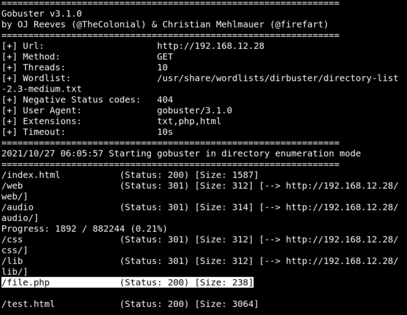

3.1 Webserver with Gobuster
Discover the directory and files on the webserver.
On your Kali Machine run the following command.
$gobuster dir -u http://192.168.12.28 -x txt,php,html --wordlist /usr/share/wordlists/dirbuster/directory-list-2.3-medium.txt

You have an interesting path (/file.php) that might have file inclusions.